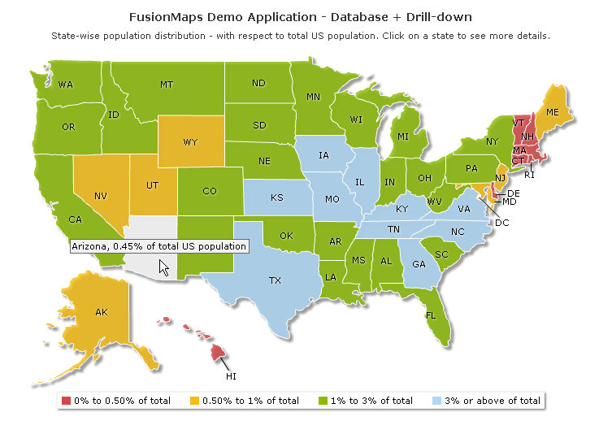

| |
| In this page we will see the code used to achieve the Goal 1. Below is the important part of the code. |
| |
| Before moving further with the process of plotting data from database, we recommend to go through Using Data String Method and Using Data URL Method to know the basics about FusionMaps XT generation procedure. |
| |
| The code discussed here is present in Download Package > Code > VB_NET > DrillDown folder. |
| |
| The code to create the US map and plot data from database contained in Default.aspx is listed as under : |
| |
<%@ Page Language="VB" AutoEventWireup="false" CodeFile="Default.aspx.vb" Inherits="FusionMapsDBExample_DrillDown" %>
<html>
<head>
<title>FusionMaps XT - Database Example</title>
<script language="Javascript" src="../Maps/FusionCharts.js"></script>
</head>
<body>
<form id='form1' name='form1' method='post' runat="server">
<% %>
<asp:Literal ID="USMap" runat="server" />
</form>
</body>
</html> |
| |
| In the above code, we first include FusionCharts.js file to enable us embed the map using JavaScript. The USA map loads in Literal USMap through the following code behind script (Default.aspx.vb). |
| |
Imports InfoSoftGlobal
Partial Class FusionMapsDBExample_DrillDown
Inherits System.Web.UI.Page
Protected Sub Page_Load(ByVal sender As Object, ByVal e As System.EventArgs) Handles Me.Load
Dim DataURL As String
DataURL = "DataGen.aspx?op=GetUSMapDetails"
Dim mapHTML As String = FusionCharts.RenderChart("../Maps/FCMap_USA.swf", DataURL, "", "mapid", "600", "400", False, False)
USMap.Text = mapHTML
End Sub
End Class |
In the above code we do the following :
- We create a Data URL to fetch map XML from DataGen.aspx (whose code behind page is DataGen.aspx.vb).
- We call RenderChart() function from FusionCharts class of InfosoftGlobal assembly which renders map of USA after passing the Data URL to it.
|
| |
| Let's now go thorough the code of DataGen.aspx.vb that fetches data and forms map XML. |
| |
Imports DataConnection
Imports System.Text
Partial Class DrillDown_dataGen
Inherits System.Web.UI.Page
Protected Sub Page_Load(ByVal ob As Object, ByVal e As EventArgs) Handles Me.Load
Dim op As String
op = Request("op")
Select Case op
Case "GetUSMapDetails"
GetUSMapDetails()
Case "GetStateDetails"
GetStateDetails()
Case "getChartEmpStat"
getChartEmpStat()
End Select
End Sub
...
Public Sub GetUSMapDetails()
Dim strQuery As String
Dim sumdata As Double
strXML.Append("<map borderColor='FFFFFF' fillAlpha='80' showBevel='0' numberSuffix='% of total US population' legendBorderColor='F1f1f1' hoverColor='FFFFFF' legendPosition='bottom'>")
strXML.Append("<colorRange>")
strXML.Append("<color minValue='0' maxValue='0.50' displayValue='0% to 0.50% of total' color='D64646' />")
strXML.Append("<color minValue='0.50' maxValue='1' displayValue='0.50% to 1% of total' color='F6BD0F' />")
strXML.Append("<color minValue='1' maxValue='3' displayValue='1% to 3% of total' color='8BBA00' />")
strXML.Append("<color minValue='3' maxValue='10' displayValue='3% or above of total' color='AFD8F8' />")
strXML.Append("</colorRange>")
strQuery = "select sum(data) as datap from fcmap_distribution"
Dim Rs As New DbConn(strQuery)
sumdata = 0
If Rs.ReadData.HasRows = True Then
Rs.ReadData.Read()
sumdata = Convert.ToDouble(Rs.ReadData("datap"))
End If
Rs.ReadData.Close()
strQuery = "select Internal_Id, (sum(data) / " & sumdata & ")*100 as datap from fcmap_distribution group by Internal_Id"
Dim Rs1 As New DbConn(strQuery)
strXML.Append("<data>")
If Rs1.ReadData.HasRows = True Then
While Rs1.ReadData.Read()
strQuery = "select map_swf from fcmap_master where Internal_Id='" + Rs1.ReadData("Internal_Id").ToString() + "'"
Dim Rs2 As New DbConn(strQuery)
Rs2.ReadData.Read()
Dim LinkURL As String
LinkURL = "StateDetails.aspx?Internal_Id=" & Rs1.ReadData("Internal_Id").ToString() & "&map=" & Rs2.ReadData("map_swf").ToString()
strXML.Append("<entity id='" & Rs1.ReadData("Internal_Id") & "' value='" & Math.Round(Convert.ToDouble(Rs1.ReadData("datap")), 2) & "' link='" & LinkURL & "' />")
Rs2.ReadData.Close()
End While
End If
Rs1.ReadData.Close()
strXML.Append("</data>")
strXML.Append("<styles><definition><style type='animation' name='animX' param='_xscale' start='0' duration='1' /><style type='animation' name='animY' param='_yscale' start='0' duration='1' /><style type='animation' name='animAlpha' param='_alpha' start='0' duration='1' /><style type='shadow' name='myShadow' color='FFFFFF' distance='1' /></definition>")
strXML.Append("<application><apply toObject='PLOT' styles='animX,animY' /><apply toObject='LABELS' styles='myShadow,animAlpha' /></application></styles>")
strXML.Append("</map>")
Response.ContentType = "text/xml"
Response.Write(strXML.ToString())
End Sub
...
End Class |
| |
| Let's discuss the steps involved in the above code : |
| |
| The first part of the code is executed when the page is loaded: |
| |
op = Request("op")
Select Case op
Case "GetUSMapDetails"
GetUSMapDetails()
Case "GetStateDetails"
GetStateDetails()
Case "getChartEmpStat"
getChartEmpStat()
End Select |
| |
| The file getDetails.aspx is passed a querystring - ?op=GetUSMapDetails. The above code retrieves this querystring value in variable -op. Depending on the value of op the code calls related subroutines using select case statement. Hence, when op's value is GetUSMapDetails, it calls GetUSMapDetails() subroutine, which in turn builds and returns the world map XML as Data URL. |
| |
| Now, we will dive deep into the GetUSMapDetails() subroutine. |
| |
- We create a StringBuilder object - strXML (to store XML data) and sumdata to store sum of values from database. We also opened the root map element providing the map properties.
|
| |
| strXML.Append("<map borderColor='FFFFFF' fillAlpha='80' showBevel='0' numberSuffix='% of total US population' legendBorderColor='F1f1f1' hoverColor='FFFFFF' legendPosition='bottom'>") |
| |
- Next, we define color range for the main US Map.
|
| |
strXML.Append("<colorRange>")
strXML.Append("<color minValue='0' maxValue='0.50' displayValue='0% to 0.50% of total' color='D64646' />")
strXML.Append("<color minValue='0.50' maxValue='1' displayValue='0.50% to 1% of total' color='F6BD0F' />")
strXML.Append("<color minValue='1' maxValue='3' displayValue='1% to 3% of total' color='8BBA00' />")
strXML.Append("<color minValue='3' maxValue='10' displayValue='3% or above of total' color='AFD8F8' />")
strXML.Append("</colorRange>") |
| |
| |
| To connect to database we have created a namespace DataConnection (file DbHelper.vb in App_Code folder). This contains a class DbConn, which we will be using to connect to database in this example and subsequent example(s). |
| |
- We had included DataConnection namespace in the header of the code page. DataConnection contains the connection parameters to connect to database.
|
| |
- Here comes the database mining part where we start fetching data.
- First we initialize sumdata to store sum total of all data found in the table - fcmap_distribution. That represents the total US population (fictitious of-course). We did this using SQL Query : "select sum(data) as datap from fcmap_distribution".
- Next, we fetch internal ID of each entity/state of US map and get the percentage of population of each entity/state against total US population. This is stored in data reader aReader1 using the SQL query - "select Internal_Id, (sum(data) / " & sumdata & ")*100 as datap from fcmap_distribution group by Internal_Id"'. We again used fcmap_distribution table here.
- We get total population of each state and divide it by sum total US population and multiply it with 100 to get the percentage value.
- Now we iterate through each record in the data reader and create entity element for each state.
|
| |
strQuery = "select sum(data) as datap from fcmap_distribution"
Dim Rs As New DbConn(strQuery)
sumdata = 0
If Rs.ReadData.HasRows = True Then
Rs.ReadData.Read()
sumdata = Convert.ToDouble(Rs.ReadData("datap"))
End If
Rs.ReadData.Close()
strQuery = "select Internal_Id, (sum(data) / " & sumdata & ")*100 as datap from fcmap_distribution group by Internal_Id"
Dim Rs1 As New DbConn(strQuery)
strXML.Append("<data>")
If Rs1.ReadData.HasRows = True Then
While Rs1.ReadData.Read()
strQuery = "select map_swf from fcmap_master where Internal_Id='" + Rs1.ReadData("Internal_Id").ToString() + "'"
Dim Rs2 As New DbConn(strQuery)
Rs2.ReadData.Read()
Dim LinkURL As String
LinkURL = "StateDetails.aspx?Internal_Id=" & Rs1.ReadData("Internal_Id").ToString() & "&map=" & Rs2.ReadData("map_swf").ToString()
strXML.Append("<entity id='" & Rs1.ReadData("Internal_Id") & "' value='" & Math.Round(Convert.ToDouble(Rs1.ReadData("datap")), 2) & "' link='" & LinkURL & "' />")
Rs2.ReadData.Close()
End While
End If
Rs1.ReadData.Close()
strXML.Append("</data>")
|
| |
- Here we extract internalID from Rs1.ReadData("Internal_Id") and set to id attribute.
- We get percentage of population of the state against total US population from Math.Round(Convert.ToDouble(Rs1.ReadData("datap")) and set to value attribute. We set the decimal limit of the value to 2 places using ASP.NET function Math.Round().
|
| |
We also set up drill-down link to each entity. Each entity on click will drill down to another asp file. This we did in the entity entry itself as shown above using link attribute. Let's see the how the link is structured.
...LinkURL = "StateDetails.aspx?Internal_Id=" & Rs1.ReadData("Internal_Id").ToString() & "&map=" & Rs2.ReadData("map_swf").ToString()...
- All states/entities will drill-down to StateDetails.aspx page.
- Each entity will pass a query string variable - Internal_Id whose value will be the internal id of that state. This is extracted out from the"Internal_id" field of the iterated record.
- Each entity will also pass the map file name to StateDetails.aspx page using querystring variable -map. Note that another data reader Rs2 is created for each iteration which stores the map file name of the related Internal_Id in "map_swf" field. Data reader Rs2 is created from table fcmap_master using SQL query - "select map_swf from fcmap_master where Internal_Id='" + Rs1.ReadData("Internal_Id").ToString() + "'".
|
| |
| Thus all entities are created. |
| |
- Next we add styles like XScale, YScale, alpha & shadow styles to the map using <styles> element.
- Finally we return the XML as Data URL to RenderChart() function in Default.aspx.vb.
|
| |
Response.ContentType = "text/xml"
Response.Write(strXML.ToString())
|
| |
| The above mentioned RenderChart() function (in Default.aspx.vb) renders the map retrieving the XML and set it to literal control USMap. |
| |
Dim mapHTML As String = FusionCharts.RenderChart("../Maps/FCMap_USA.swf", DataURL, "", "mapid", "600", "400", False, False)
USMap.Text = mapHTML |
| |
| Here is the screenshot of the US map that we just created extracting data from database. |
| |
|  |
| |
| |
| We have used DataConnection Namespace in the above code and in all subsequent Database example(s). Using this class we establish connection to the MS Access database with ADO.NET component. You can always change your connection to any other database server. Let's go through the lines of code inside this class: |
| |
Imports Microsoft.VisualBasic
Imports System.Data.Odbc
Imports System.Data
Imports System.Web
Imports System.Configuration
Namespace DataConnection
Public Class DbConn
Public connection As OdbcConnection
Public ReadData As OdbcDataReader
Public aCommand As OdbcCommand
Public Sub New(ByVal strQuery As String)
Dim ConnectionString As String, connectionName As String
connectionName = "MSAccessConnection"
ConnectionString = ConfigurationManager.ConnectionStrings(connectionName).ConnectionString
Try
connection = New OdbcConnection()
connection.ConnectionString = ConnectionString
connection.Open()
GetReader(strQuery)
Catch ex As Exception
HttpContext.Current.Response.Write(ex.Message)
End Try
End Sub
Public Sub GetReader(ByVal strQuery As String)
aCommand = New OdbcCommand(strQuery, connection)
ReadData = aCommand.ExecuteReader(CommandBehavior.CloseConnection)
End Sub
End Class
End Namespace |
| |
What it does:
- Set up Connection as per the connection string defined in web.config file.
<connectionStrings>
<add name="MSAccessConnection" providerName="System.Data.Odbc" connectionString="Driver={Microsoft Access Driver (*.mdb)};Dbq=|DataDirectory|\FactoryDB.mdb"/>
</connectionStrings>
To change your connection to any other database server, you only need to setup web.config file.
- The class DBConn accepts SQL Query, executes it and returns the result as ASP.NET DataReader object -ReadData.
|
| |
| Example: |
| |
Imports DataConnection
...
Dim strQuery As String = "select colName1, colName2 from yourTable"
Dim Rs As New DbConn(strQuery)
Dim accumulator as Integer=0
If Rs.ReadData.HasRows = True Then
While Rs1.ReadData.Read()
sumdata += Convert.ToInt32(Rs.ReadData("colName1"))+Convert.ToInt32(Rs.ReadData("colName2"))
Wend
End If
Rs.ReadData.Close()
|
|